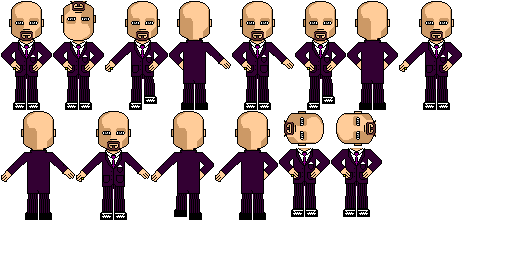
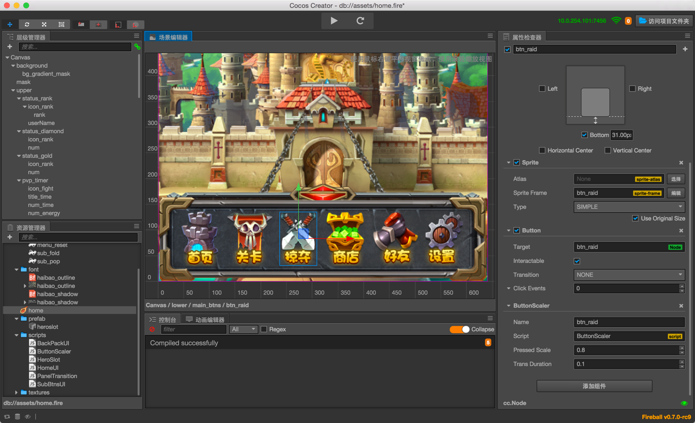

Cocos2d는 파이썬으로 작성된 게임 엔진이다.
후에 앱스토어가 설립되고 아이폰 앱 SDK가 배포되자 개발자들 중 한 명인 Ricardo Quesada가 Cocos2d를 Objective-C로 재작성하여 Cocos2d-iPhone을 만들었고, 이것이 후일 Cocos2d-x의 모태가 된다.

이후 중국의 Zhe Wang이 Cocos2d를 포크하여 Cocos2d-x 프로젝트를 시작하였다.
기본적으로 Windows, Mac OS, Linux, Android, iOS등 다양한 플랫폼을 지원하고 있다.
다만 PC쪽의 플랫폼에 대한 지원은 미비하며 상황이 이렇다 보니 PC로는 프로그램이 터지나 안터지나 확인하면서 디버깅만 하고, 정작 완성 빌드는 iOS나 Android로 내보내는 상황이다.
